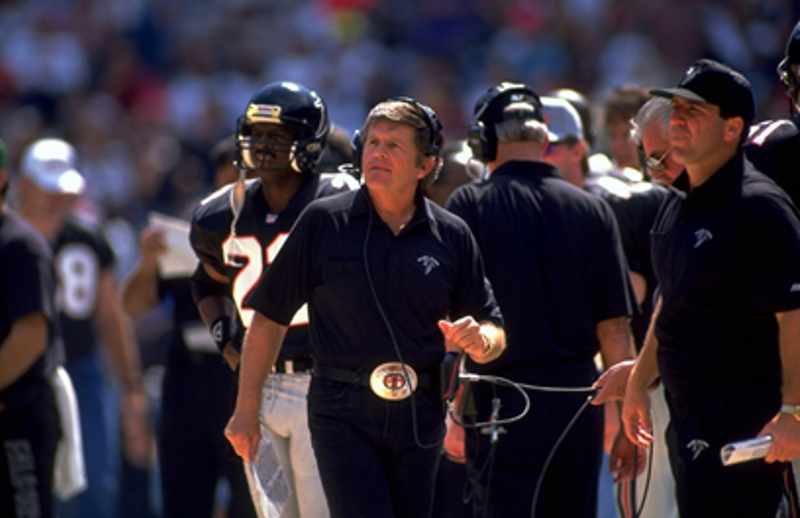

About
When people think of historic NFL defenses, often the 2000 Ravens, '85 Bears,
and the Pittsburgh "Steel Curtain"
of the '70s come to mind. The 1977 Atlanta Falcons defense is often never thought about by the common fan,
but the reality is that statistically they arguably trump them all. This defense is responsible for the NFL record
for fewest points allowed in a single season, giving up only 129 points through 14 games. This may not
seem as significant, since the NFL has increased the regular season game count to 16 (and now 17)
games, but this Falcons team also allowed the fewest points per game in NFL history, with an
astonishing 9.2 PPG.
Why
There is one major difference between the 1977 Atlanta Falcons and these other more memorable defensive teams:
those teams won the Super Bowl. The '77 Falcons on the other hand, despite their record breaking defense,
couldn't even make the playoffs. This was a feat so bizarre that the only thing that could scratch the surface
in the modern era were the 2010 San Diego Chargers ,
who missed the postseason despite having the league's number 1 offense and defense that year.
Here is a game log for the Falcons' unfortunate 7-7 season that year:
| Week |
Opponent |
Score |
| 1 |
Los Angeles Rams |
17-6, W |
| 2 |
@Washington Redskins |
6-10, L |
| 3 |
New York Giants |
17-3, W |
| 4 |
@San Francisco 49ers |
7-0, W |
| 5 |
@Buffalo Bills |
0-3, L |
| 6 |
@Chicago Bears |
16-10, W |
| 7 |
Minnesota Vikings |
7-14, L |
| 8 |
San Franciso 49ers |
3-10, L |
| 9 |
Detroit Lions |
17-6, W |
| 10 |
@New Orleans Saints |
20-21, L |
| 11 |
@Tampa Bay Buccaneers |
17-0, W |
| 12 |
New England Patriots |
10-16, L |
| 13 |
Los Angeles Rams |
7-23, L |
| 14 |
New Orleans Saints |
35-7, W |
How

Were they Good
The defense's key to dominance was the introduction of a new scheme
the rest of the league simply didn't have an answer for.
Spearheaded by defensive assistant Jerry Glanville (right)
was a playstyle he deemed the "Grits Blitz." Better known in modern
times as the 46 Defense, this scheme made life a living hell for
opposing quarterbacks in that time period. The rest of the league
ended up figuring out answers to such a defensive attack the year
after, and as a result the Falcons defense never was the same.
Were they Bad
As if it wasn't blatantly apparent by the final scores of the games
shown above, the major issue with this team was their offense, and more
specifically, their quarterback play. Pictured below are the regular
season numbers for the two quarterbacks that started games for the
Falcons in 1977, Steve Bartkowski (left) and Scott Hunter (right).
These attrocious numbers show you everything you need to know about
the team's struggles in winning football games.
| Player Name |
Games Started |
Completion % |
Yards |
TD's |
Int's |
Passer Rating |
| Scott Hunter |
7 |
46.4 |
898 |
2 |
3 |
61.6 |
| Steve Bartkowski |
7 |
47.1 |
796 |
5 |
13 |
38.4 |


For more statistics on the '77 Atlanta Falcons, click this
link.
For more information about this team in a more entertaining fashion,
watch this video here.